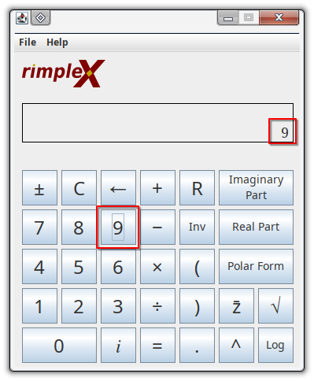
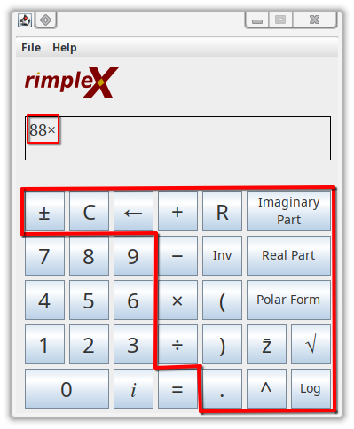
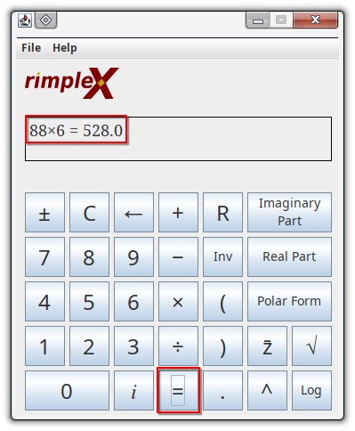

RimpleX Help Documentation
Entering numbers into the calculator:
Numbers can be entered by either clicking the number on the screen or pressing the corresponding number on the keyboard.

Entering operations into the calculator:
Operations can be entered by either clicking the icon on the screen or pressing certain keys on the keyboard.
Legend:
- Change Sign - ± - [keypress to be entered later] - Changes the sign of the current operand.
- Clear - C - [keypress to be entered later] - Clears the current operand.
- Backspace - ← - [keypress to be entered later] - Deletes the most recent character in the operand.
- Add - + - [keypress to be entered later] - Starts addition operation.
- Subtract - − - [keypress to be entered later] - Starts subtraction operation.
- Multiply - × - [keypress to be entered later] - Starts Multiplication operation.
- Divide - ÷ - [keypress to be entered later] - Starts Division operation.
- Reset - R - [keypress to be entered later] - Clears both the current operand and the previous calculation/equation.
- Inverse - Inv - [keypress to be entered later] - Inverts the current operand.
- Parentheses - (/) - [keypress to be entered later] - Inserts parentheses into the operand.
- Decimal - . - [keypress to be entered later] - Inserts a decimal point into the operand.
- Imaginary Part - Imaginary Part - [keypress to be entered later] - Shows the imaginary part of an equation.
- Real Part - Real Part - [keypress to be entered later] - Shows the real part of an equation.
- Polar Form - Polar Form - [keypress to be entered later] - Shows the polar form of an equation.
- Conjugate - z̄ - [keypress to be entered later] - Shows the conjugate of an equation.
- Exponent - ^ - [keypress to be entered later] - Inserts an exponent into the operand.
- Square root - √ - [keypress to be entered later] - Inserts a square root operation into the operand.
- Logarithm - Log - [keypress to be entered later] - Inserts a logarithm operation into the operand.

Running a calculation:
Press the Equals "=" key on the keyboard or screen to compute the current equation on the left side of the display.

Revealing the session history:
to be inserted.
Printing the session history:
to be inserted.